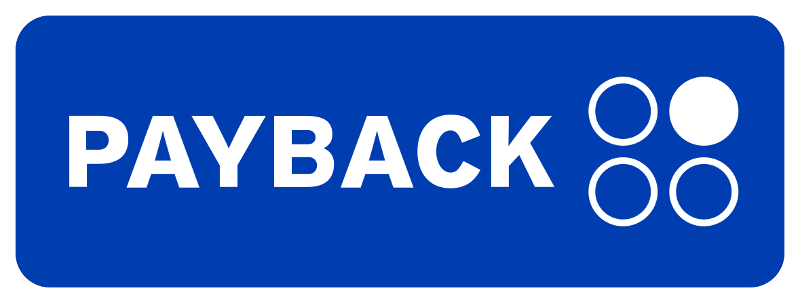

DEIN STATIONSLAUF
Punkte sammeln.
Vorteile erhalten.
Ein Bonusprogramm am Beispiel dm: Wie werden aus Einkäufen Punkte – und aus Punkten Vorteile?
1
Erkunde die vier Bereiche des Bonusprogramms.
2Tippe auf Bonnie, wenn du mehr erfahren möchtest.
3Bearbeite die Fragen auf deinem Laufzettel in Stichpunkten.
0 von 4 Bereichen entdeckt
Unterrichtssimulation · Keine Anmeldung und keine Eingabe persönlicher Daten.
MEIN DM

J